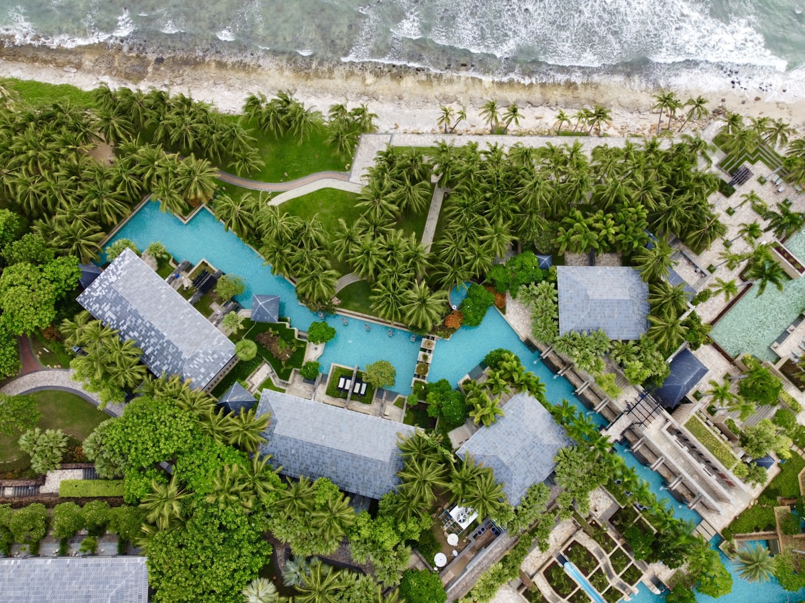
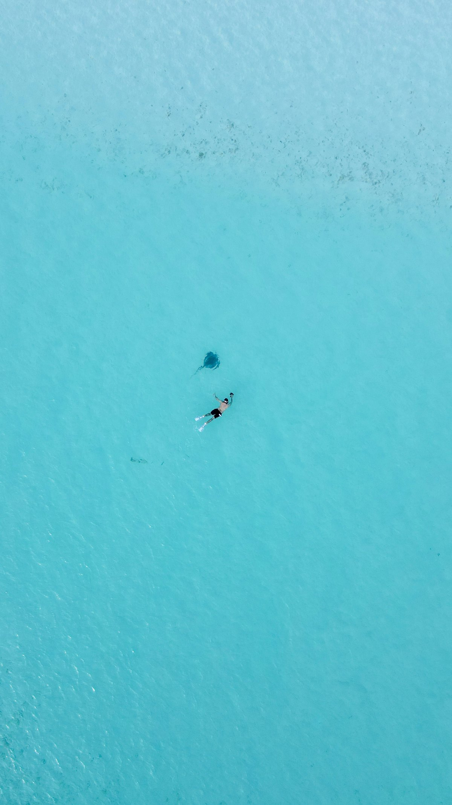
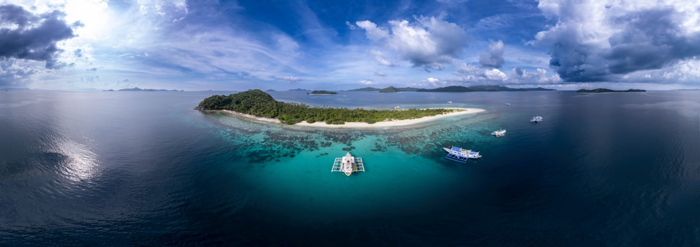
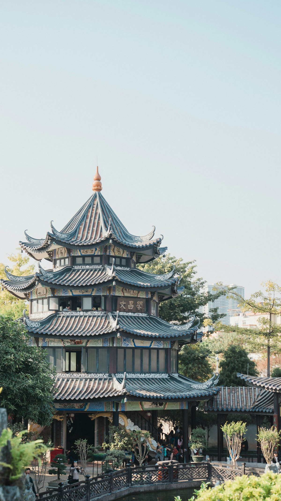
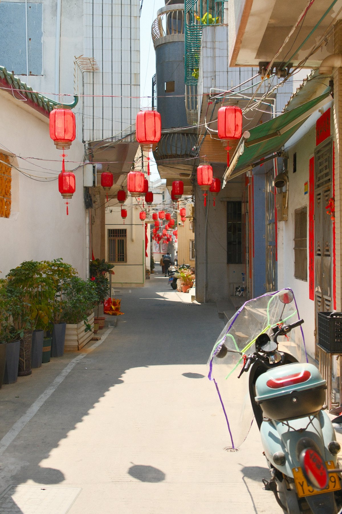
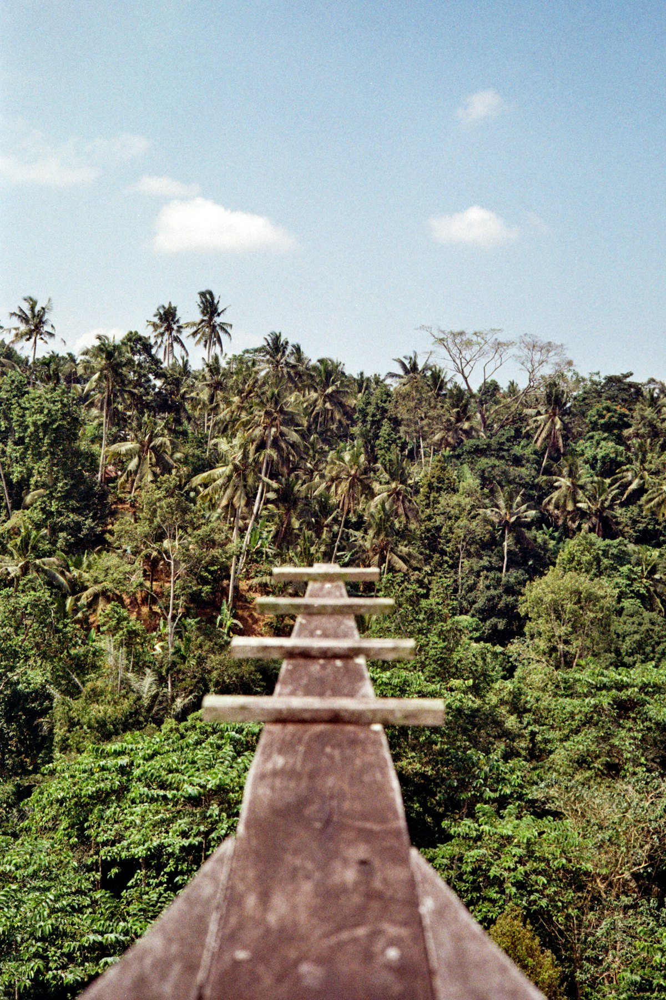
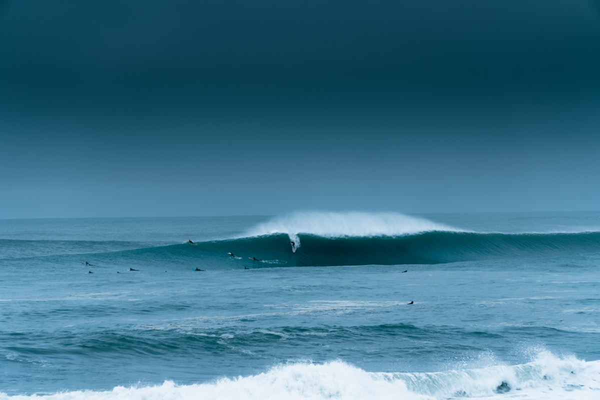
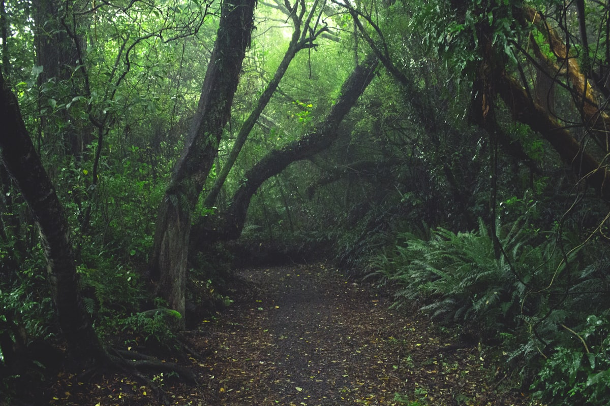

| 事项 | 结论 |
|---|---|
| 事项 | 结论 |
| 推荐方案 | 10 天 9 晚（海口 2 + 文昌万宁 2 + 三亚 4 + 五指山 2） |
| 返程约束 | 第 10 天从海口美兰/三亚凤凰机场飞走，或高铁返 |
| 行程链 | 海口 → 文昌 → 万宁 → 三亚 → 五指山 → 返程 |
| 预算（人均） | 经济 3500–5000 ／ 标准 5500–7500 ／ 舒适 9000–13000 |
| 三件提前事 | ① 蜈支洲岛船票提前订 ② 南山/天涯海角预约购票 ③ 离岛免税额度提前了解 |
| 季节提醒 | 11–3 月温暖避寒最佳；6–9 月湿热多台风 |
| 交通卡 | 环岛高铁东线串联主要城市，租车自驾走环岛旅游公路 |
以下为 10 天 9 晚的推荐节奏。东线沿海、中线进山，自驾/高铁结合。
| 日期 | 行程 | 过夜地 | 主题 |
|---|---|---|---|
| D1 抵海口 | 入住骑楼老街附近，老街夜景 + 老爸茶 | 海口骑楼 | 抵达 + 市井烟火 |
| D2 | 海口 → 文昌：航天科普中心 + 东郊椰林 | 文昌 | 航天 + 椰林 |
| D3 | 文昌 → 万宁：日月湾冲浪 + 石梅湾 | 万宁 | 冲浪海岸 |
| D4 | 万宁 → 三亚：亚龙湾沙滩 + 傍晚椰梦长廊 | 三亚亚龙湾 | 度假海湾 |
| D5 | 蜈支洲岛（全天潜水/水上项目） | 三亚 | 海岛潜水 |
| D6 | 南山海上观音 → 天涯海角 | 三亚 | 祈福 + 地标 |
| D7 | 亚龙湾热带天堂森林公园 → 免税城购物 | 三亚 | 雨林 + 免税 |
| D8 | 三亚 → 五指山：热带雨林徒步 + 水满乡 | 五指山 | 雨林探秘 |
| D9 | 五指山 → 海口：环岛高速返程 + 伴手礼采购 | 海口 | 收尾休整 |
| D10 返程 | 上午美兰机场免税提货，午后航班返程 | — | 收尾 |
以下为 10 天全程的逐小时执行时间线，可当作「当天打开照着走」的清单。标注 ※ 的可选项视体力与天气取舍。
| 时间 | 事项 |
|---|---|
| 13:00–16:00 | 抵达海口（美兰机场，高铁/地铁进城约 30 分钟） |
| 16:30–18:30 | 骑楼老街（免费）：南洋风格骑楼群，中山路、博爱路逛吃 |
| 19:00–20:30 | 晚餐：文昌鸡/老爸茶 + 清补凉，尝海南粉 |
| 20:30–22:00 | 世纪大桥（免费）：海甸河夜景，或骑楼夜景 |
| 22:30 | 回酒店休息 |
| 时间 | 事项 |
|---|---|
| 08:00–09:30 | 海口乘环岛高铁至文昌站（约 30 分钟，参考价约 30 元） |
| 10:00–12:00 | 文昌航天科普中心（参考价约 100 元）：近距离看火箭发射塔架 |
| 12:30–13:30 | 午餐：文昌鸡（四大名菜之一） |
| 14:00–17:00 | 东郊椰林（免费）：百万株椰树，清澜大桥看海，椰子现砍现喝 |
| 17:30–19:00 | 晚餐：文昌海鲜，入住文城镇或回海口 |
| 19:30 | 回酒店休息 |
| 时间 | 事项 |
|---|---|
| 08:00–10:00 | 文昌乘高铁至万宁站（约 40 分钟），打车至日月湾 |
| 10:30–13:00 | 日月湾（免费）：中国冲浪胜地，报名体验课（参考 200–400 元/人） |
| 13:00–14:00 | 午餐：湾边简餐/椰子鸡 |
| 14:30–17:00 | 石梅湾（免费）：《非诚勿扰》取景地，椰林海湾散步 |
| 17:30–19:00 | 可选 ※ 兴隆热带植物园（参考价约 50 元）或咖啡庄园 |
| 19:30 | 晚餐：兴隆东南亚风味（华侨美食） |
| 时间 | 事项 |
|---|---|
| 08:00–10:30 | 万宁乘高铁至三亚站（约 45 分钟，参考价约 70 元），或自驾环岛旅游公路 |
| 11:00–12:30 | 入住亚龙湾酒店区，午餐 |
| 14:00–17:30 | 亚龙湾沙滩（免费）：沙白水清，游泳/摩托艇/香蕉船 |
| 17:30–19:30 | 椰梦长廊（免费）：三亚湾日落，全场椰树成排 |
| 20:00 | 晚餐：海鲜大餐（第一市场加工或酒店餐厅） |
| 时间 | 事项 |
|---|---|
| 08:00–09:00 | 出发至蜈支洲岛码头（市区约 40 分钟车程） |
| 09:30–10:00 | 乘船登岛（往返船票参考价约 140 元，含门票） |
| 10:00–12:30 | 潜水（参考价 380 元起）/浮潜，或电瓶车环岛看观日岩、情人桥 |
| 12:30–13:30 | 岛上简餐 |
| 13:30–16:00 | 水上项目：摩托艇、拖伞（参考 200–400 元/项），白沙滩游泳 |
| 16:00–17:00 | 返程离岛，回酒店休息 |
| 19:00 | 晚餐：三亚本地菜或海鲜 |
| 时间 | 事项 |
|---|---|
| 08:00–12:30 | 南山文化旅游区（参考价约 108–129 元）：108 米海上观音像、南山寺，园区电瓶车游览 |
| 12:30–13:30 | 午餐：南山素斋（参考人均 60–80 元） |
| 14:00–16:30 | 天涯海角（参考价约 68 元）：南天一柱、天涯石，海边礁石群 |
| 17:00–18:30 | 可选 ※ 大小洞天（参考价约 90 元）或回酒店休息 |
| 19:00 | 晚餐：三亚海鲜/椰子鸡火锅 |
| 时间 | 事项 |
|---|---|
| 08:30–12:00 | 亚龙湾热带天堂森林公园（参考价约 158 元）：过江龙索桥、《非诚勿扰》鸟巢酒店外观 |
| 12:30–13:30 | 午餐：亚龙湾周边 |
| 14:00–18:00 | cdf 三亚国际免税城：化妆品/箱包/酒水，离岛免税额度每人每年 10 万元 |
| 18:30–20:00 | 可选 ※ 三亚千古情（参考价约 260 元）或海边晚餐 |
| 20:30 | 回酒店 |
| 时间 | 事项 |
|---|---|
| 08:00–10:00 | 三亚出发，自驾/包车至五指山（约 2 小时，环岛高速） |
| 10:30–13:00 | 五指山热带雨林景区（参考价约 50 元）：雨林栈道、百年古树、天然氧吧 |
| 13:00–14:00 | 午餐：水满乡黎族农家菜（五脚猪、竹筒饭） |
| 14:30–16:30 | 可选 ※ 五指山漂流（参考价约 150–200 元，夏季）或黎苗风情村寨 |
| 17:30 | 入住五指山/水满乡民宿，晚上看星空 |
| 19:00 | 晚餐：黎族风味 |
| 时间 | 事项 |
|---|---|
| 08:30–11:00 | 五指山出发经海南中线高速返回海口（约 3 小时） |
| 11:30–13:00 | 午餐：海口，采购伴手礼（海南咖啡、黄灯笼辣椒酱、椰子糖） |
| 14:00–17:00 | 可选 ※ 海口观澜湖电影公社（参考价约 150 元）或免税提货、市区逛街 |
| 18:00–20:00 | 晚餐：海口夜宵（糟粕醋火锅、生蚝） |
| 20:30 | 入住海口美兰机场附近酒店（方便次日早班机） |
| 时间 | 事项 |
|---|---|
| 08:00–08:30 | 早餐后退房，打车前往美兰机场（市区约 30–40 分钟） |
| 08:30–10:30 | 办理值机 + 离岛免税提货（随身行李注意液体限制） |
| 10:30–11:30 | 午餐：机场或登机口简餐 |
| 12:00–16:00 | 航班返程（或高铁过海返广东） |
必去（必去）/ 顺路（顺路）/ 可跳过（可跳过）。

必去
顺路
必去
顺路
顺路
必去
可跳过图片为 Unsplash 主题图（三亚湾、热带海岛、雨林栈道、冲浪等均为同主题示意图），用于页面配图。更多免费景点：三亚湾椰梦长廊、海口世纪大桥、文昌东郊椰林、兴隆热带植物园。
点击左侧节点可在地图上定位；点击地图 marker 会高亮对应节点。坐标为 WGS-84 转 GCJ-02 纠偏后标注。
以下为单人、不含购物的估算；门票为旺季参考价，以现场为准。机票是最大开支（淡季往返 800–1500 元，旺季春节翻倍），不同出发地浮动较大。
| 项目 | 经济（3500–5000） | 标准（5500–7500） | 舒适（9000–13000） |
|---|---|---|---|
| 往返交通 | 淡季机票约 800–1200 | 机票约 1200–2000 | 旺季/直飞约 2500–4000 |
| 省内交通 | 高铁约 300–400 | 高铁 + 打车约 600–800 | 全程租车自驾约 1500–2500 |
| 住宿（9 晚） | 青旅/快捷 900–1350 | 连锁/民宿 1800–2700 | 亚龙湾度假酒店 5000–8000 |
| 门票 | 基础景点约 400 | 含蜈支洲岛+南山约 700 | 全含 + 水上项目约 1500 |
| 餐饮（10 天） | 600–900 | 1200–1600（含海鲜） | 2200–3000（海鲜大餐） |
带娃推荐：三亚亚特兰蒂斯水世界/水族馆、亚龙湾沙滩玩沙、南山看海上观音；把五指山徒步换成南湾猴岛（缆车观猴）或分界洲岛海洋剧场，节奏更轻松。
冲浪爱好者可把万宁扩到 3 天（日月湾+石梅湾），把五指山换成尖峰岭原始森林或七仙岭温泉。冬季（11–3 月）浪况稳定是冲浪黄金季，需提前预约教练与板。
| 方式 | 时长 | 参考价 | 备注 |
|---|---|---|---|
| 飞机（推荐） | 视出发地 2–4h | 800–2500 元 | 美兰/凤凰/博鳌三机场，旺季需早订 |
| 高铁过海 | 广州→海口约 4–5h | 约 300–400 元 | 火车轮渡跨琼州海峡，体验独特 |
| 自驾过海 | 视出发地 + 轮渡 | 轮渡 400–600 元/车 | 徐闻海安港—海口轮渡约 1.5h，旺季排队长 |
| 区域 | 价格/晚 | 优点 | 短板 |
|---|---|---|---|
| 海口骑楼/市区 | 快捷 250–450 | 近老街、机场高铁方便，物价低 | 无海景 |
| 文昌文城/东郊 | 快捷/民宿 200–400 | 安静、椰林海景，价格亲民 | 配套较少 |
| 万宁日月湾/石梅湾 | 民宿/冲浪店 300–700 | 冲浪氛围浓，海湾安静 | 旺季房源紧 |
| 三亚亚龙湾 | 度假酒店 800–2500 | 一线海景、水质最好 | 春节翻倍，餐饮贵 |
| 三亚市区/三亚湾 | 快捷/民宿 300–600 | 性价比高、看日落方便 | 部分区域离景点远 |